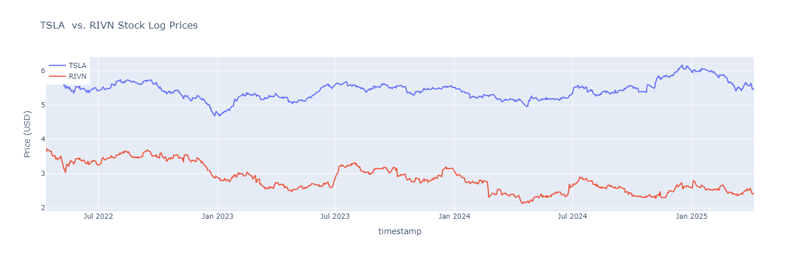
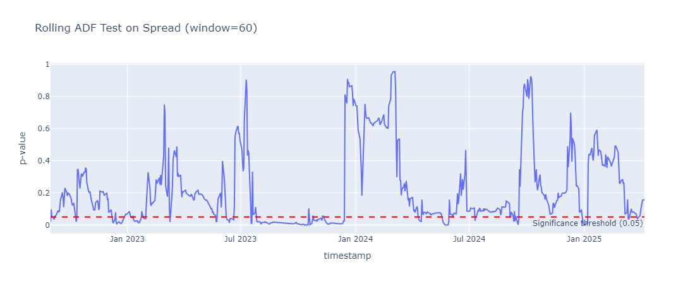
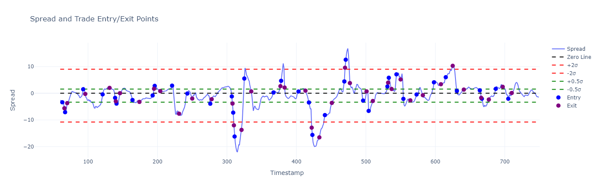
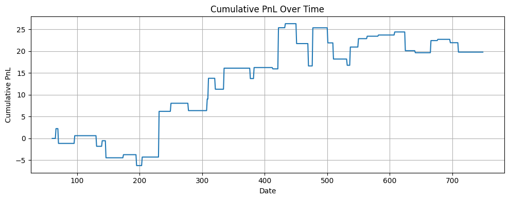

Strategy
1 Pair Trading Strategy Overview
Trading Setup
- Data Frequency: Daily resolution
- Hedge Ratio Update: Every two weeks
- Cointegration Test Frequency: Every two weeks
- Trading Session Timeout: 10 days
2 Strategy Logic
Calculate Hedge Ratio Compute the hedge ratio \(\beta_i\) based on the past 20 days of log prices: \[ \beta_i = \frac{\text{Cov}(\log P_{\text{RIVN}}, \log P_{\text{TSLA}})}{\text{Var}(\log P_{\text{TSLA}})} \]
Compute Spread \[ \text{Spread}_t = \log(P_{\text{RIVN}, t}) - \beta_i \cdot \log(P_{\text{TSLA}, t}) \]
Cointegration Test Test 60-day rolling window of log prices for cointegration using the ADF test.
Z-Score Based Trading Rules If cointegration is statistically significant:
- Entry: if \(Z > 2\) or \(Z < -2\)
- Exit: if \(|Z| < 0.5\)
- Stop Loss: if \(|Z| > 3\)
Trading Session Timeout Force close any open positions after 10 trading days.
3 Blotter (Example)
| timestamp | close_RIVN | close_TSLA | log_close_TSLA | log_close_RIVN | hedge_ratio | spread | z_score | adf_stat | p_value | position | trade_entry | trade_exit | pnl | cumulative_pnl | |
|---|---|---|---|---|---|---|---|---|---|---|---|---|---|---|---|
| 60 | 2022-07-08 | 31.99 | 250.76 | 5.524496 | 3.465423 | 1.108226 | -2.656969 | -1.225487 | -1.551199 | 0.508049 | 0 | False | False | 0.0 | 0.000000 |
| 61 | 2022-07-11 | 29.93 | 234.34 | 5.456773 | 3.398861 | 1.132528 | -2.781088 | -1.369341 | -1.838264 | 0.361637 | 0 | False | False | 0.0 | 0.000000 |
| 62 | 2022-07-12 | 30.15 | 233.07 | 5.451339 | 3.406185 | 1.141880 | -2.818590 | -1.551397 | -1.676010 | 0.443513 | 0 | False | False | 0.0 | 0.000000 |
| 63 | 2022-07-13 | 30.76 | 237.04 | 5.468229 | 3.426215 | 1.245694 | -3.385527 | -2.298003 | -1.857733 | 0.352199 | 1 | True | False | 0.0 | 0.000000 |
| 64 | 2022-07-14 | 30.83 | 238.31 | 5.473572 | 3.428488 | 1.327210 | -3.836090 | -2.618729 | -2.188877 | 0.210307 | 1 | False | False | 0.0 | 0.000000 |
| … | … | … | … | … | … | … | … | … | … | … | … | … | … | … | |
| 749 | 2025-04-07 | 11.21 | 233.29 | 5.452282 | 2.416806 | 0.711856 | -1.464435 | -1.436818 | -0.656144 | 0.857785 | 0 | False | False | 0.0 | 19.805438 |
690 rows × 15 columns
4 Graphs
4.1 TSLA vs. RIVN Stock Log Prices

4.2 Rolling ADF Test on Spread (window=60)

4.3 Spread and Trade Entry/Exit Points

4.4 PnL Over Time
